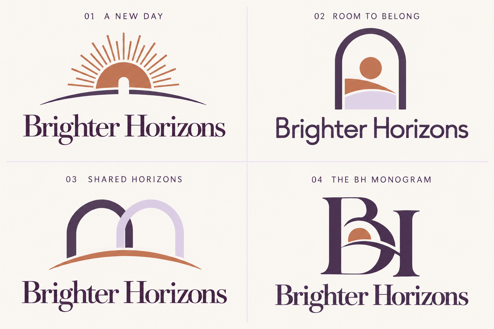

View the selected sunrise logo →
← Back to the websiteView the new sunrise refinements →
Four directions. One brighter future.
Logo concepts for Brighter Horizons. Tap the image to open the full-size version and zoom in.


Concept review only. The website’s current logo has not been replaced.